01
EXPERIENCIA
Más de 20 años participando activamente en proyectos de ingeniería civil, construcción pesada y mantenimiento industrial continuo.
H.S.C. S.A.S. diseña, desarrolla y ejecuta proyectos integrales de ingeniería civil, fabricación y montaje de estructuras metálicas, electromecánica y mantenimiento especializado para las principales industrias del país.
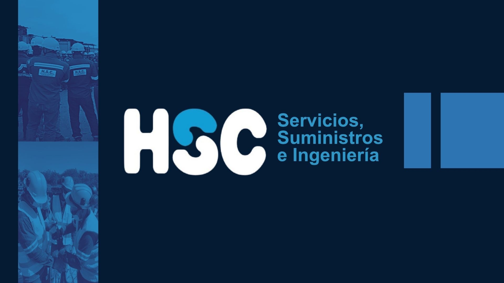
Años de Experiencia en Obra
Proyectos Industriales Ejecutados
Cumplimiento en Seguridad SST
Grandes Clientes Corporativos
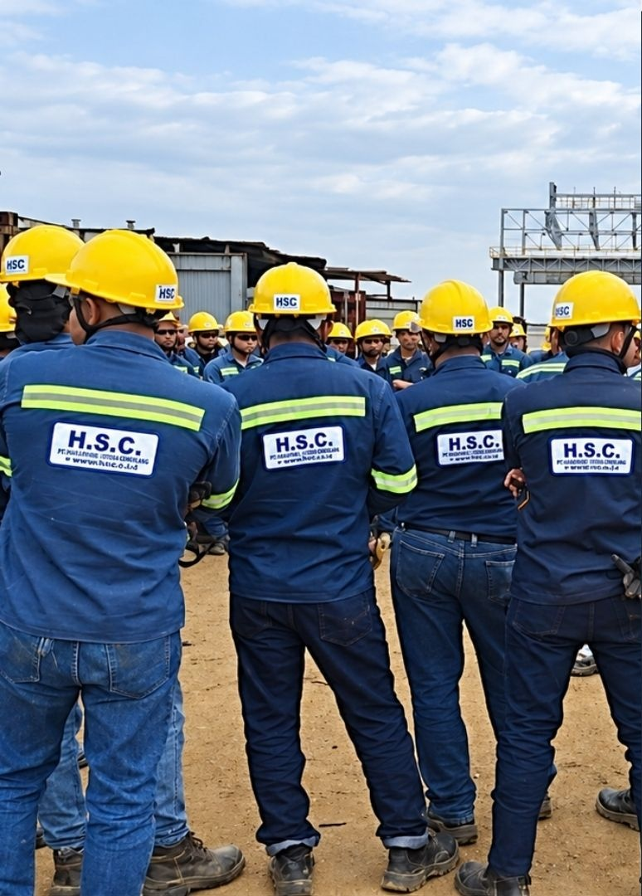
H.S.C. Servicios, Suministros e Ingeniería S.A.S. diseña, desarrolla y ejecuta proyectos de ingeniería, construcción y mantenimiento para el sector industrial.
Con más de 20 años de experiencia, combinamos conocimiento técnico de punta, personal altamente calificado y una gestión rigurosa orientada al cumplimiento de especificaciones técnicas, cronogramas contractuales y los más exigentes estándares de seguridad industrial.
Garantizamos solvencia técnica, administrativa y operativa en cada fase de la obra, desde los planos conceptuales hasta la entrega llave en mano.
Más de 20 años participando activamente en proyectos de ingeniería civil, construcción pesada y mantenimiento industrial continuo.
Equipos técnicos, profesionales y operativos preparados para responder con eficacia ante diferentes niveles de complejidad constructiva.
Coordinación total entre el diseño estructural, fabricación en taller, montaje en campo, mantenimiento y personal especializado.
Cumplimiento estricto de especificaciones técnicas del cliente, códigos sismorresistentes y estándares internacionales de calidad.
Cultura arraigada de prevención y cumplimiento riguroso de todos los requisitos de Seguridad y Salud en el Trabajo, con meta cero accidentes.
Respeto absoluto por los cronogramas establecidos, optimizando tiempos de parada de planta y requerimientos operativos del cliente.
Soluciones de ingeniería a la medida con cuadrillas certificadas, maquinaria especializada y gestión técnica integral.
Ejecutamos proyectos de construcción civil con equipos técnicos calificados, cumpliendo cronogramas y estándares de calidad industrial para soportar cargas pesadas y tráfico continuo.
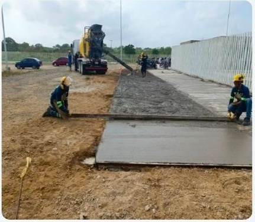
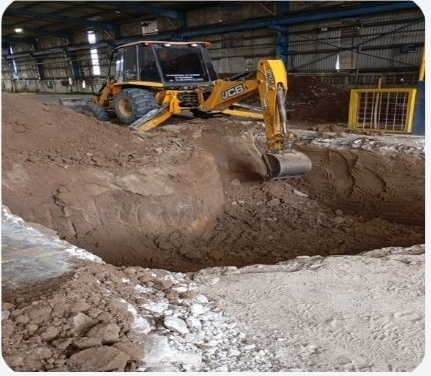
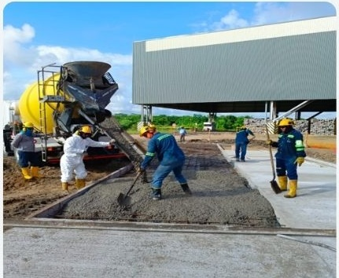
Diseñamos, fabricamos y montamos estructuras metálicas y cubiertas para plantas industriales y proyectos de infraestructura. Aseguramos precisión en el cálculo estructural, controles de calidad en taller y seguridad en el montaje en obra.
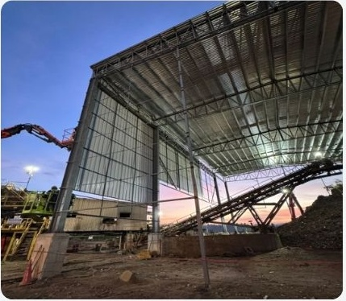
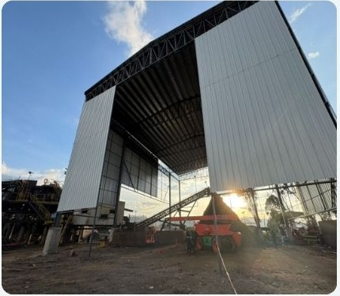
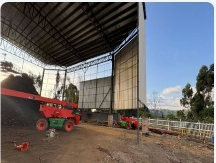
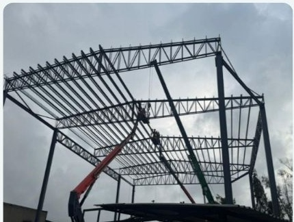
Ejecutamos el montaje, la instalación y la adecuación de sistemas, componentes electromecánicos, estructuras y equipos para proyectos industriales complejos.
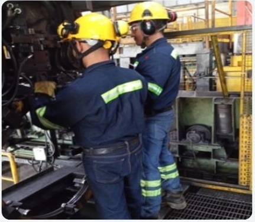
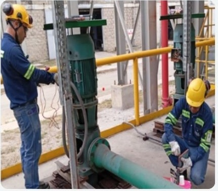
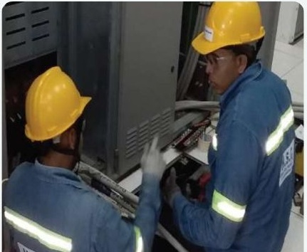
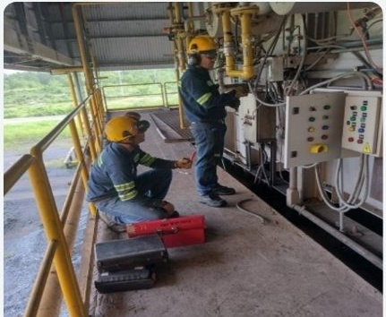
Construcción y adecuación de obras de urbanismo e infraestructura perimetral, incluyendo todas las actividades complementarias requeridas para la correcta ejecución y entrega de los proyectos.
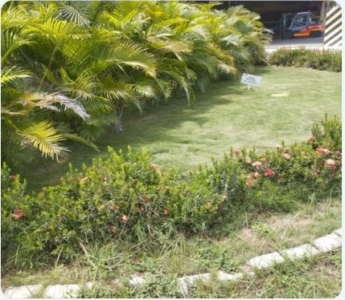
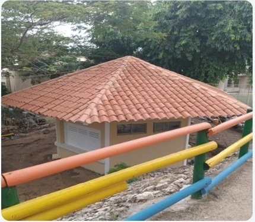
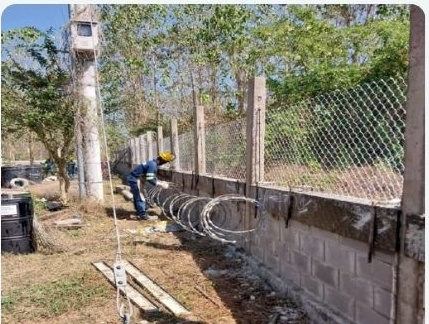
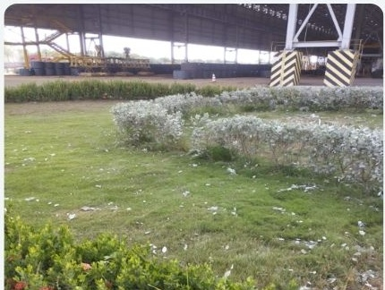
Disponemos de personal técnico, profesional y operativo certificado para atender proyectos de construcción, mantenimiento y paradas de planta en los diferentes sectores industriales.
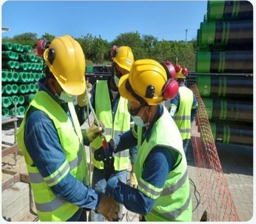
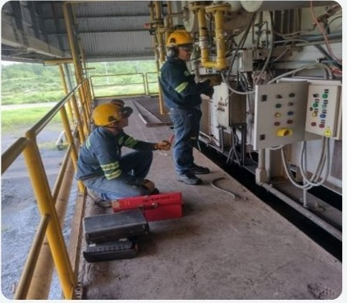
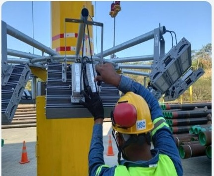
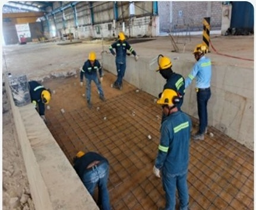
Fabricación y mecanizado de piezas y componentes industriales de alta precisión, elaborados de acuerdo con planos de ingeniería, especificaciones técnicas y requerimientos de tolerancia de cada proyecto.
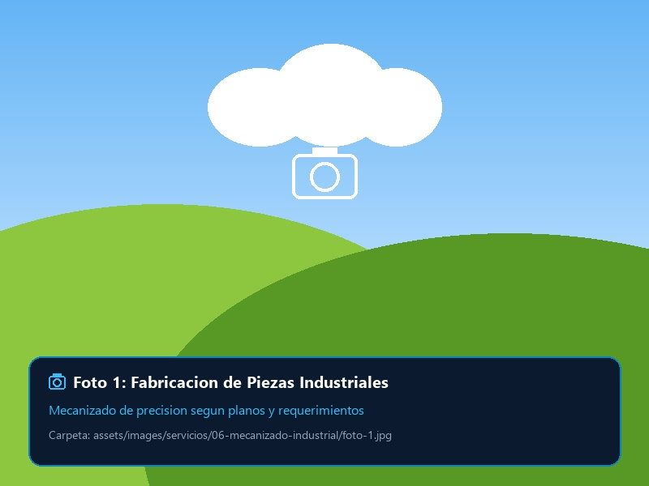
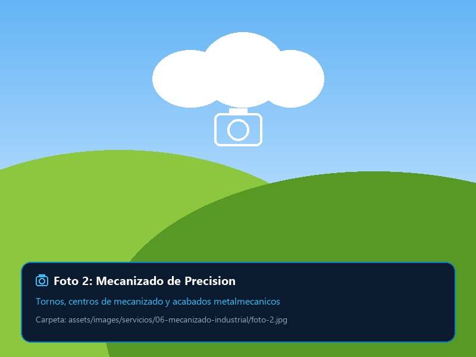
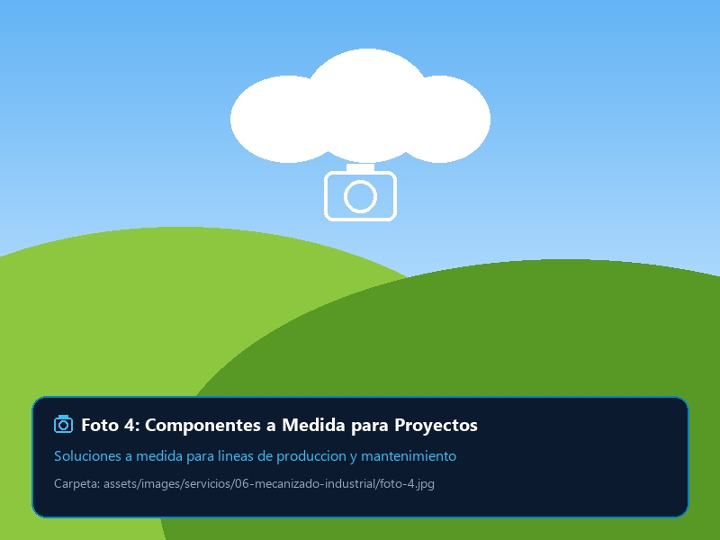
Proyectos de alta envergadura ejecutados para grandes corporaciones industriales en Barranquilla, Manizales, Cartagena e Itagüí.
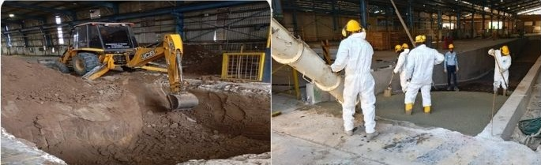
TERNIUM COLOMBIA S.A.S. BarranquillaEjecución de excavaciones profundas, contenciones y vaciado de losas de alta resistencia para maniobras de carga y manejo de aguas industriales.
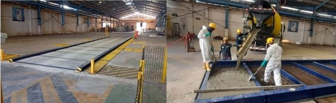
TERNIUM COLOMBIA S.A.S. BarranquillaConstrucción de fosos, pavimentos reforzados y canalizaciones para sistemas de pesaje dinámico y automatizado de camiones pesados.
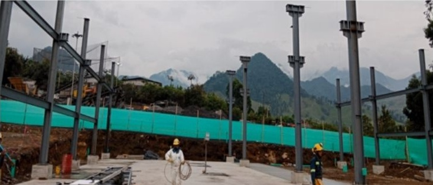
TERNIUM COLOMBIA S.A.S. ManizalesCálculo, fabricación pesada e instalación de columnas, cerchas y contraventeos para nave de alta exigencia mecánica en la planta de Manizales.
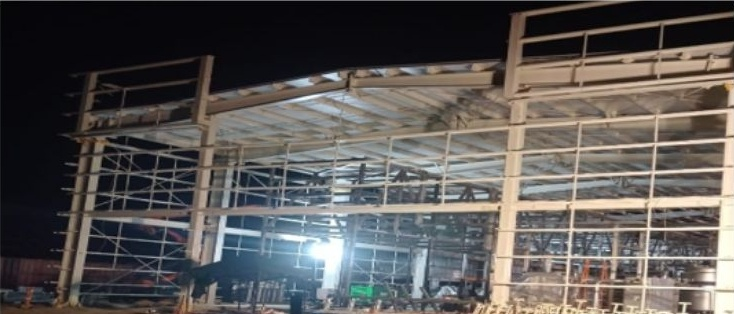
TERNIUM COLOMBIA S.A.S. ManizalesEstructura metálica para centro logístico y de servicios industriales, incluyendo cubierta termoacústica y montaje continuo.
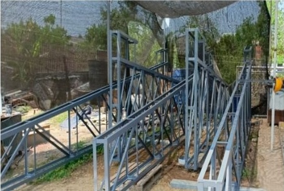
TERNIUM COLOMBIA S.A.S. Manizales / Itagüí / BarranquillaAmpliación Nave Despacho 1 (Manizales), Bodega Centro de Servicios (Itagüí) y Cubierta Nave Almacenamiento (Barranquilla).
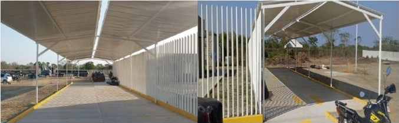
TERNIUM DEL ATLÁNTICO Palmar de VarelaParqueadero cubierto para motos, pavimentos rígidos para alto tonelaje, cerramientos en bloque vibroprensado y construcción integral de enfermería médica.
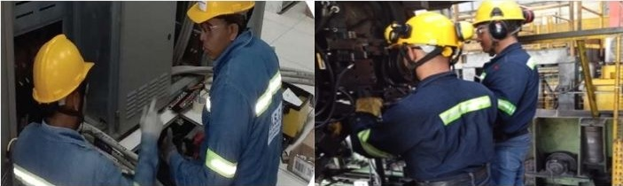
TERNIUM DEL ATLÁNTICO Palmar de VarelaDisponibilidad de mecánicos, soldadores y electricistas para paradas preventivas; adecuación de parqueadero para mulas y manejo paisajístico de zonas verdes.
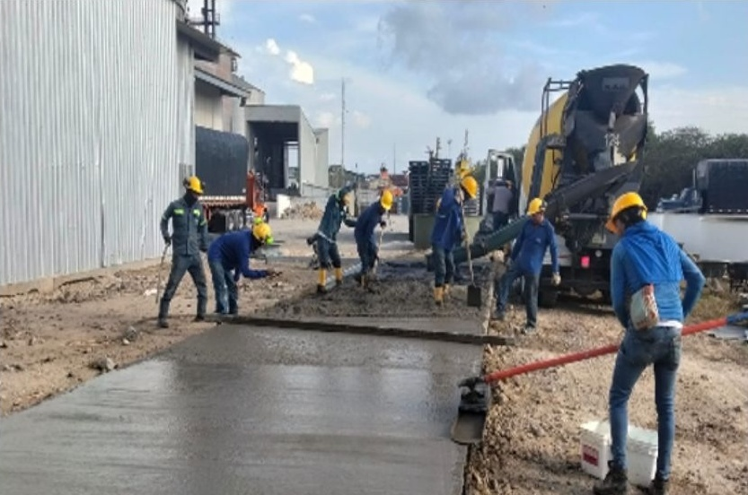
MOLINOS 3 CASTILLO CartagenaFundición de placa contrapiso con endurecedor de cuarzo y adecuación integral de infraestructura para bodegaje de cereales y derivados en Cartagena.
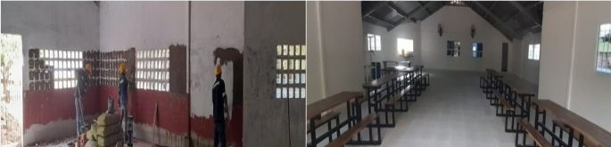
IMPACTO SOCIAL Malambo / PalmarProyecto social: remodelación del comedor escolar en Colegio Juan XXIII (Malambo) y adecuación de aulas y cubiertas en Colegio María Auxiliadora (Palmar de Varela).
Tres compromisos fundamentales que aseguran la rentabilidad, seguridad y puntualidad de sus inversiones de ingeniería.
Trayectoria consolidada y comprobable en proyectos de alta complejidad técnica en ingeniería, construcción y mantenimiento industrial.
Integramos bajo un mismo mando el diseño, fabricación, montaje electromecánico y personal certificado, facilitando y simplificando la gestión de nuestros clientes.
Trabajamos bajo una estricta cultura preventiva enfocada en el bienestar humano, el cumplimiento irrestricto de las normas SST y la ejecución segura de cada faena.
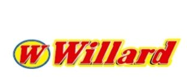
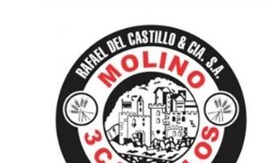
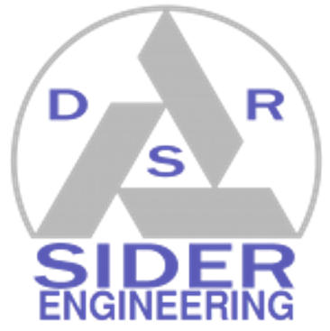
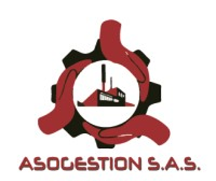
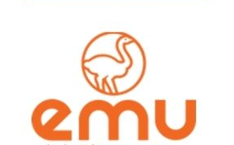
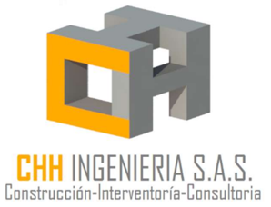
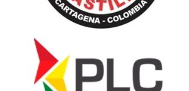
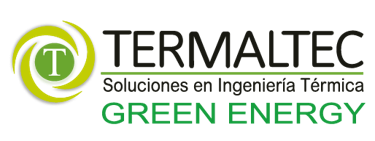
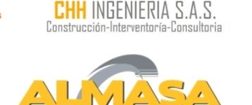
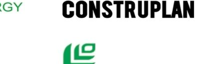
Estamos listos para evaluar sus requerimientos técnicos y suministrarle la mejor propuesta técnico-económica.
(034) 233 4564
Línea de atención y cotizaciones comercialeshola@sitioincreible.co
Envíenos sus pliegos de condiciones o planoswww.sitioincreible.co
Portal oficial y actualización de proyectosColombia (Atlántico / Caldas / Antioquia)
Capacidad operativa de despliegue a nivel nacionalDiligencie el formulario y un asesor técnico responderá de manera inmediata.